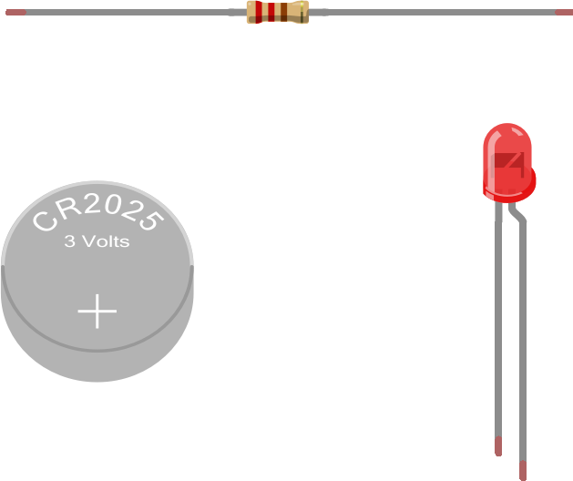

In this project, you’re going to create your first electric circuit. But, before we do that, some introductory discussion would probably be helpful. We highly recommend reading the following: Introduction to Electronics. Note that in future projects we will be calling out introductory material in the "New Concepts Required" section at the top of the projects. We recommend that before jumping into a project, you ensure that you've read and familiarized yourself with any of the concepts listed in that section.
Now that you've (hopefully) spent some time reading our introduction to electricity and circuits, let’s jump into a real-life example of building a circuit. We’ve provided all parts you will need to build this circuit as part of the RaspberrySTEMTM kit, in the bag marked Your First Circuit RaspberrySTEMTM Cell. Open the bag and follow along!
The purpose of this circuit is to power and illuminate a “light emitting diode" (or “LED” for short). An LED a light source that looks and works a bit like a lightbulb (in that they both light up when you run electric current through them), so this circuit will work nearly identically to the circuit discussed in Introduction to Electronics with the battery and the lightbulb.
To build this circuit, you’ll need the following three components (all provided in the bag marked Your First Circuit RaspberrySTEM Cell):

By the way, remember how we mentioned in Introduction to Electronics that sometimes we want to provide extra resistance to a circuit to get it to work? Notice that we have included a resistor in this circuit – its job is to reduce the amount of electric current flowing through the circuit so that the LED doesn’t break.
Okay, let’s give this a try, step by step…
Using your fingers, pinch one lead of the resistor (the "leads" are the metal wires on either side) to the positive (+) side of the battery and pinch the shorter lead of the LED (one of the leads is longer than the other) to the other side of the battery (we refer to this as the "negative" side).
Like this:
An important concept to understand about LEDs is that they are "unidirectional" -- in other words, they only allow electric current to flow in one direction. If you hook up the LED backwards -- in the way that electric current won't be allowed to flow through it -- it will not illuminate and the rest of the circuit will stop working as well (remember, if electric current isn't flowing at any point in the circuit, it's not going to be flowing anywhere in the circuit).
To determine the correct way to orient the LED, you can look at it's leads (the metal legs on either side of the LED). One is going to be a bit longer than the other. In order for the LED to work correctly, the longer lead should be closest to the power source and the shorter lead should be closer to ground. If you find that you believe an LED circuit should be working, but it's not, you might want to verify that the LED is oriented correctly.
By the way, even experienced electronics engineers will sometimes make this mistake, so don't feel bad if you find that you're constantly wiring LED backwards!
Using your free hand, touch the other leads of the resistor and LED together, as indicated below:

At this point, the LED should be lit, like this:

Congratulations...you just built your first electric circuit!
Sometimes your circuit won't work and you just can't figure out what the problem is. When this happens, it's a good idea to verify that wires and components aren't touching each other in places where you don't intend them to. Electric current flowing through a circuit is going to look for the easiest way to get to the lowest point of voltage (usually ground), and sometimes -- if wires or components are touching where you don't expect them to -- you may be inadvertently creating a new path for electric current to flow and that electric current may be traveling in ways that bypass your components and give you unexpected results.